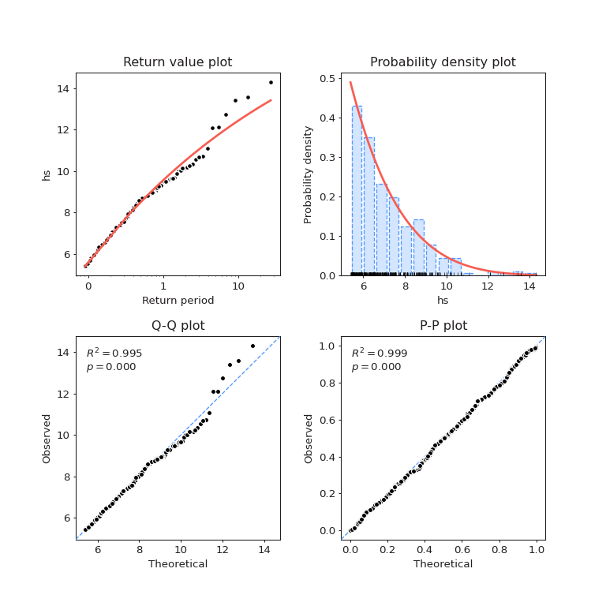
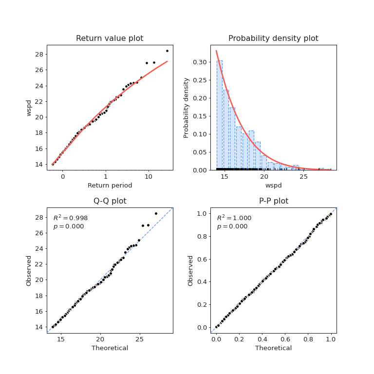

Note
Go to the end to download the full example code.
Modelling multivariate extremes#
Extreme value modelling is a central topic in the design of offshore structures.
In this package, we used the Peaks Over Threshold (POT) approach: the data above a defined threshold is kept, independent exceedances are identified based on a time-separation criterion and a GPD distribution is fitted to the set of clusters maxima. The particular case of Exponential distribution is selected using an AIC criterion. This procedure is based on the excellent package pyextremes.
We also propose in this package to compute multivariate extremes using the methodology described in Raillard et al (2019).
See also
In addition, a demonstration tool based on this module can be accessed on the Resourcecode Tools web page.
import warnings
import numpy as np
import matplotlib.pyplot as plot
import resourcecode
from resourcecode.eva import (
censgaussfit,
get_fitted_models,
get_gpd_parameters,
run_simulation,
huseby,
)
import plotly.graph_objects as go
import plotly.io as pio
pio.renderers.default = "sphinx_gallery"
Data extraction and univariate models#
We have selected a location next to Ushant island, node number 36855 and we compute the wind intensity
using the resourcecode.utils.zmcomp2metconv() function of the package.
- We also define here the tuning parameters for fitting the models to the data:
quantile above which the model is fitted;
de-clustering parameter, specified in hours.
Then, we fit the POT model to the data.
client = resourcecode.Client()
data = client.get_dataframe_from_url(
"https://resourcecode.ifremer.fr/explore?pointId=136855",
parameters=("hs", "uwnd", "vwnd"),
)
data["wspd"], data["wdir"] = resourcecode.utils.zmcomp2metconv(data.uwnd, data.vwnd)
# Tuning parameters for the POT model
quantile_fit = 0.95
r = "72H"
return_periods = np.array([1, 2, 5, 10, 25, 50, 100])
models = get_fitted_models(data[["hs", "wspd"]], quantile_fit, r)
gpd_parameters = get_gpd_parameters(models)
/opt/hostedtoolcache/Python/3.11.9/x64/lib/python3.11/site-packages/pyextremes/extremes/peaks_over_threshold.py:18: FutureWarning:
'H' is deprecated and will be removed in a future version. Please use 'h' instead of 'H'.
/opt/hostedtoolcache/Python/3.11.9/x64/lib/python3.11/site-packages/pyextremes/eva.py:525: FutureWarning:
'H' is deprecated and will be removed in a future version. Please use 'h' instead of 'H'.
/opt/hostedtoolcache/Python/3.11.9/x64/lib/python3.11/site-packages/pyextremes/extremes/peaks_over_threshold.py:18: FutureWarning:
'H' is deprecated and will be removed in a future version. Please use 'h' instead of 'H'.
/opt/hostedtoolcache/Python/3.11.9/x64/lib/python3.11/site-packages/pyextremes/eva.py:525: FutureWarning:
'H' is deprecated and will be removed in a future version. Please use 'h' instead of 'H'.
Fitted model for \(H_s\)#
We can plot the fitted model against the observations
fig = models[0].plot_diagnostic()
plot.show()

Below, one can find the estimated return levels for \(H_s\)
return_levels_Hs = models[0].get_summary(return_period=return_periods, alpha=0.95)
return_levels_Hs
Fitted model for \(W_s\)#
The diagnostic plots are below
fig = models[1].plot_diagnostic()
plot.show()

Lastly, the estimated return levels for \(W_s\)
return_levels_Wspd = models[1].get_summary(return_period=return_periods, alpha=0.95)
return_levels_Wspd
Multivariate model: Gaussian copula#
We will fit the censored Gaussian copula to estimate the joint distribution of extremes.
thanks to the resourcecode.eva.censgaussfit() function.
rho_nataf = censgaussfit(data[["hs", "wspd"]].values, quantile_fit).x
In the reference paper, they used the Huseby approach to compute environmental countours, which is a method based on monte-carlo simulation. The function func:resourcecode.eva.run_simulation is thus used to simulate from the fitted model, using the marginal distributions found earlier.
nataf = run_simulation(rho_nataf, quantile_fit, gpd_parameters, n_simulations=1000000)
Environmental contours#
We first have to define the appropriate level set for the Huseby method.# They are defined using the number of joint excess of \(H_s\) and \(W_s\).
npy = data.query(
f"hs>{models[0].extremes_kwargs['threshold']} and wspd>{models[1].extremes_kwargs['threshold']}"
).shape[0] / (np.unique(data.index.year).size)
levels = 1 - 1 / (return_periods * npy)
We can then use the resourcecode.eva.huseby() function to effectively compute the contours.
The value of 120 can be changed to obtain smoother contours, at the price of higher computationnal cost.
with warnings.catch_warnings():
warnings.simplefilter("ignore")
# on some cases, we may divide by zero, and numpy warns us
# about that. Let's hide this warning to the users.
X, Y, theta = huseby(nataf, levels, 120)
Lastly, we can plot the contours, here single lines.
fig = go.Figure()
fig.add_traces(
[
go.Scatter(
x=X[:, i],
y=Y[:, i],
mode="lines",
name=str(retlev),
)
for i, retlev in enumerate(return_periods)
]
)
fig.update_layout(
scene=dict(
xaxis_title=data.columns[0],
yaxis_title=data.columns[1],
zaxis_title=data.columns[2],
),
height=1200,
)
fig
Total running time of the script: (0 minutes 24.461 seconds)